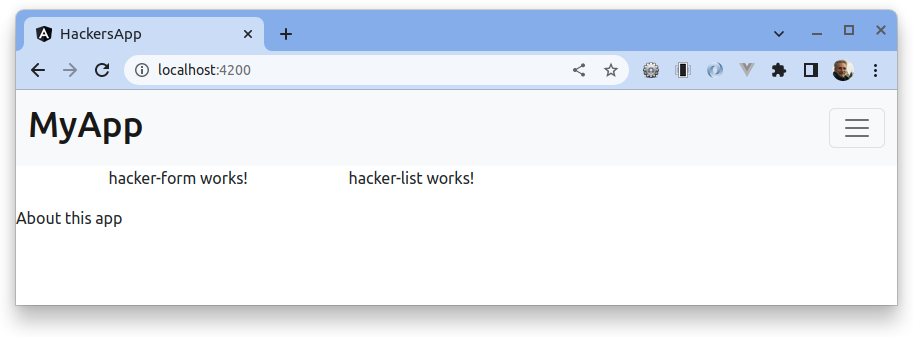
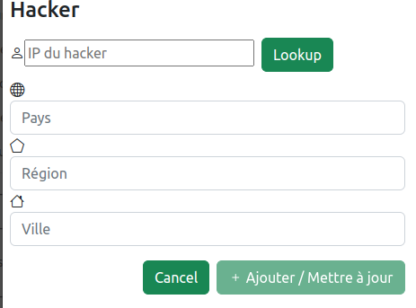
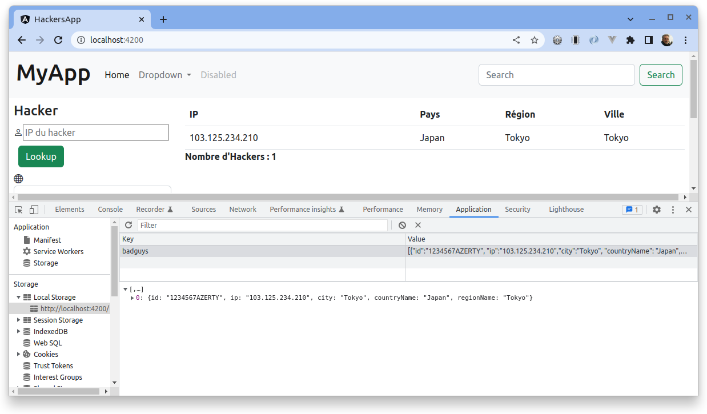

IP Hackers App
- Objectif
- L’idée de l’application
- L’analyse
- Initialisation de l’application (CLI)
- Les dépendances
- Les composants
- Travaux pratiques
- Structure des données
- Création des services
- API de géolocalisation
- Intégration de la clé API dans l’environnement
- Implémentation du service lookupIp
- Maquette de home.component.html
- Composants inclus dans la page Home
- Conception du formulaire
- Travaux pratiques
- Enregistrer des données sur le client
- composant ManagerHackerService
- composant HackerListComponent
- Travaux pratiques
Objectif
-
Apprendre à concevoir une application front gérant un ensemble d’items + CRUD.
-
Apprendre à utiliser un formulaire structuré
-
Apprendre à mettre en place une communication entre composants (via event)
-
Apprendre à sauvegarder des données de l’application sur le client (localStorage)
L’idée de l’application
On souhaite concevoir une application web qui gère une liste d’IP à l’origine de requêtes malveillantes et qui tente de les géolocaliser via l’appel à un service distant, avec clé d’authentification.
Dans notre contexte, on appelle Hacker une machine à l’origine d’une requête HTTP malveillante. Cela ne veut pas pour autant dire que l’action est intentionnelle, en référence aux machines zombies…
| Machine zombie ? Voir ici Machine zombie sur wikipedia |
L’analyse
On concevra une application qui présentera deux pages :
-
Une page
Homeprésentant la liste des IP et un formulaire de modification/création. -
Une page
About
Les dépendances
On décide de s’appuyer sur bootstrap pour la mise en forme CSS.
Installation des modules bootstrap
(racine du projet)$ npm install --save bootstrap
(racine du projet)$ npm install --save bootstrap-iconsL’option save indique que le paquetage s’installe uniquement dans le projet et non globalement.
Pour nous simplifier le travail de présentation, nous utiliserons le module bootstrap pour angular (https://ng-bootstrap.github.io/#/home)
ng add @ng-bootstrap/ng-bootstrap
Ajouter les dépendances dans angular.json :
[...] "styles": [ "node_modules/bootstrap/dist/css/bootstrap.min.css", "node_modules/bootstrap-icons/font/bootstrap-icons.css", "src/styles.css" ], "scripts": [ "node_modules/bootstrap/dist/js/bootstrap.bundle.min.js" ] [...]
| Sous Visual Code, on gagnerait à installer l’extension IntelliSense for CSS class names in HTML pour profiter de la complétion des classes CSS. |
Les composants
L’application proposera plusieurs "pages", qui devront présenter la même structure.
Nous allons donc factoriser le modèle de présentation par une entête et un pied de page, chacun étant représenté par un composant.
Nous allons avoir besoin de deux services. Un pour gérer l’appel à une API externe et un autre pour la gestion des sauvegardes des données sur le client (local storage)
Création du composant Header
ng g component component/header
Nous prendrons un template classique de la documentation bootstrap.
<nav class="navbar navbar-expand-xl navbar-light bg-light">
<div class="container-fluid">
<a class="navbar-brand" href="#">
<h1>MyApp</h1>
</a>
<button class="navbar-toggler" type="button" data-bs-toggle="collapse" data-bs-target="#navbarSupportedContent"
aria-controls="navbarSupportedContent" aria-expanded="false" aria-label="Toggle navigation">
<span class="navbar-toggler-icon"></span>
</button>
<div class="collapse navbar-collapse" id="navbarSupportedContent">
<ul class="navbar-nav me-auto mb-2 mb-lg-0">
<li class="nav-item">
<a class="nav-link active" aria-current="page" href="#">Home</a>
</li>
<li class="nav-item dropdown">
<a class="nav-link dropdown-toggle" href="#" id="navbarDropdown" role="button" data-bs-toggle="dropdown"
aria-expanded="false">
Dropdown
</a>
<ul class="dropdown-menu" aria-labelledby="navbarDropdown">
<li><a class="dropdown-item" href="#">Action</a></li>
<li><a class="dropdown-item" href="#">Another action</a></li>
<li>
<hr class="dropdown-divider">
</li>
<li><a class="dropdown-item" href="#">Something else here</a></li>
</ul>
</li>
<li class="nav-item">
<a class="nav-link disabled" href="#" tabindex="-1" aria-disabled="true">Disabled</a>
</li>
</ul>
<form class="d-flex">
<input class="form-control me-2" type="search" placeholder="Search" aria-label="Search">
<button class="btn btn-outline-success" type="submit">Search</button>
</form>
</div>
</div>
</nav>Faire de même pour le footer.
Conception des routes
On se contente de définir la route par défaut (composant Home)
import { NgModule } from '@angular/core';
import { RouterModule, Routes } from '@angular/router';
import { HomeComponent } from './component/home/home.component';
const routes: Routes = [
{path: '', component: HomeComponent}
];
@NgModule({
imports: [RouterModule.forRoot(routes)],
exports: [RouterModule]
})
export class AppRoutingModule { }Travaux pratiques
-
Ajouter une page
APropos(associé à une route, avec un lien dans la barre de navigation) qui présente à l’utilisateur le lien vers ce document ainsi que le nom du ou des développeurs qui ont réalisé le travail demandé.
Structure des données
Il est temps de définir une structure de données qui caractérise un hacker dans notre application (vous enrichirez cette représentation plus tard).
Cela passe par la définition d’une interface (sens UML) et d’une classe qui l’implémente. Ainsi, si l’on modifie l’interface, le développeur sera dans l’obligation de retoucher la ou les classes qui l’implémentent.
Nous souhaitons obtenir l’arborescence provisoire suivante :
├src
├── app
│ ├── component
│ │ ├── footer
│ │ ├── header
│ │ └── home
│ ├── models
│ │ ├── Hacker.ts
│ │ └── IHacker.ts
│ └── service
├── assetsCréer le dossier models, ainsi que les 2 fichiers qui sont présentés dans l’arborescence ci-dessus. Voici leur implémentation.
/**
* Représente la structure de données d'un Hacker
* L'id sera autogénéré par l'application (null si nouveau)
*/
export interface IHacker {
ip: string,
countryName: string,
regionName: string,
city: string,
id?: string
}et
import { IHacker } from "./IHacker";
export class Hacker implements IHacker {
constructor(
public countryName: string,
public regionName: string,
public city: string,
public ip: string,
public id?: string) {
// rien à faire de plus dans ce constructeur
}
}À ce niveau, l’application devrait être opérationnelle. Réglez les problèmes éventuels avant de poursuivre.
Création des services
Nous allons créer deux services, l’un aura la responsabilité d’obtenir la géolocalisation d’une IP en appelant un service externe (déjà vu dans le TD Hello World), et l’autre de gérer l’enregistrement des données de "hackers" sur le localStorage du client.
| En savoir plus sur le localStorage : https://developer.mozilla.org/fr/docs/Web/API/Window/localStorage |
Création des deux services (toujours à partir de la racine du projet)
ng generate service service/lookupIp ng generate service service/managerHacker
API de géolocalisation
Nous utiliserons le service https://ipstack.com/product dans sa version gratuite.
Réaliser les actions ci-dessous.
-
Créer un compte sur cette plateforme
-
Choisir une formule
-
Copier votre clé d’accès à l’API
-
Tester votre clé :
Exemple de résultat attendu.
⇒ Remarquez la présence d’un lien vers le drapeau du pays (format vectoriel svg).
Intégration de la clé API dans l’environnement
Nous allons stocker la clé API du développeur dans un fichier de ressource qui nous permettra de définir des variables d’environnement.
Cette possibilité est intégrée à Angular.
(racine de l'application) ng generate environments CREATE src/environments/environment.ts (31 bytes) CREATE src/environments/environment.development.ts (31 bytes) UPDATE angular.json (3171 bytes)
Les données déclarées dans environment.development.ts ne seront accessibles qu’en mode dev.
Intégrons à ce fichier quelques variables, dont la clé de l’API d’ipstack.com du développeur :
export const environment = {
production: true,
apiBaseUrl: 'https://api.ipstack.com/',
keyAPI: 'A RENSEIGNER'
};export const environment = {
production: false,
apiBaseUrl: 'http://api.ipstack.com/',
keyAPI: 'VOTRE CLE DE DEV'
};Implémentation du service lookupIp
Nous ajoutons une méthode que nous nommons getGeoLocationIp qui prend un paramètre nommé ip et retourne une référence à un objet de type Observable (pour rafraichir votre mémoire, reportez-vous au premier TD HelloWorld)
import { HttpClient } from '@angular/common/http';
import { Injectable } from '@angular/core';
import { environment } from 'src/environments/environment'; (1)
@Injectable({
providedIn: 'root'
})
export class LookupIpService {
constructor(private http:HttpClient) { }
public getGeoLocationIp(ip: string) : any {
return this.http.get(environment.apiBaseUrl + ip + '&output=json&access_key=' + environment.keyAPI);
}
}| 1 | En phase de développement, le fichier src/environments/environment.ts est dynamiquement remplacé par src/environments/environment.development.ts.
Ce mécanisme est inscrit dans le fichier Merci Angular ! |
À ce niveau, l’application devrait toujours être opérationnelle. Réglez les problèmes éventuels avant de poursuivre.
Maquette de home.component.html
Nous souhaitons que la page principale présente à la fois la liste des hackers détenus par l’applicaton dans son localStorage et un formulaire pour l'édition et la création.
Il est d’usage de réaliser une maquette avant de se lancer dans la création de la vue. Cette maquette peut être produite à la main, sur papier, ou via des logiciels spécialisés. C’est rapide à réaliser, et on peut ainsi soumettre plus efficacement nos idées au client.
| Voir ici le concept de : maquette |
|
La conception de la maquette a été réalisée en utilisant plantuml et salt Vous trouverez le code de cette maquette ici : code de la maquette |
Composants inclus dans la page Home
Nous allons créer 2 composants : HackerFormComponent et HackerListComponent
Création des composants
ng generate component component/hackerForm ng generate component component/hackerList
Inclusion des composants dans Home
On donne 1/3 de la page au formulaire et le reste à la liste (en bootstrap, la somme des colonnes est 12)
<div class="w-100 p-2 ">
<div class="row">
<div class="col-md-3">
<app-hacker-form></app-hacker-form>
</div>
<div class="col-md-9">
<app-hacker-list></app-hacker-list>
</div>
</div>
</div>À ce niveau, l’application devrait être opérationnelle.
Exemple : 
Réglez les problèmes éventuels avant de poursuivre.
Conception du formulaire
Il y a 2 façons d’implémenter les formulaires en Angular.
-
Les formulaires réactifs
-
Les formulaires pilotés par les templates
Voir en détail ici : https://angular.io/guide/forms-overview
Nous ferons usage des formulaires réactifs (approche plus structurée)
Prenez le temps de consulter le guide officiel : https://angular.io/guide/reactive-forms
Ajouter la dépendance à ReactiveFormsModule
Commençons par ajouter une dépendance à notre projet (ReactiveFormsModule)
[...]
import { ReactiveFormsModule } from '@angular/forms';
imports: [
[...],
ReactiveFormsModule
],Implémenter la classe du composant HackerFormComponent
import { Component } from '@angular/core';
import { FormControl, FormGroup } from '@angular/forms';
import { Hacker } from 'src/app/models/Hacker';
@Component({
selector: 'app-hacker-form',
templateUrl: './hacker-form.component.html',
styleUrls: ['./hacker-form.component.css']
})
export class HackerFormComponent {
hacker: Hacker = new Hacker('','','','')
hackerForm = new FormGroup({ (1)
ip: new FormControl(''),
countryName: new FormControl(''),
regionName: new FormControl(''),
city: new FormControl(''),
id: new FormControl(undefined)
})
onSubmit() {
console.log("Submit")
console.log(this.hackerForm.value)
}
clear() {
this.hackerForm.controls.ip.setValue("IP à renseigner") (2)
console.log("cancel")
console.log(this.hackerForm.value)
}
}| 1 | Cet objet permet de créer un formulaire réactif. Toute modification apportée dans le formulaire HTML sera répercutée sur ces objets. La structure de l’objet FormGroup reproduit la structure de données IHacker (un interface au sens UML). |
| 2 | La mise à jour de la valeur du contrôle sera répercutée sur la vue. |
Implémenter le template du composant HackerFormComponent
Conformément au guide d’angular, le formulaire fait référence à un formGroup de la classe.
<form [formGroup]="hackerForm" ...>
On fait usage des classes et icons de bootStrap (pour le choix des icones voir https://icons.getbootstrap.com/)
<div>
<h4>Hacker</h4>
<form [formGroup]="hackerForm" (ngSubmit)="onSubmit()"> (1) (2)
<div class="form-group">
<i class="bi bi-person"></i>
<input class="d-inline" formControlName="ip" (3)
placeholder="IP du hacker" required>
<button type="button" class="btn btn-success m-2 d-inline">Lookup</button>
</div>
<div class="form-group">
<i class="bi bi-globe"></i>
<input class="form-control" formControlName="countryName"
placeholder="Pays" required>
</div>
<div class="form-group">
<i class="bi bi-pentagon"></i>
<input class="form-control" formControlName="regionName"
placeholder="Région" required>
</div>
<div class="form-group">
<i class="bi bi-house"></i>
<input class="form-control" formControlName="city"
placeholder="Ville" required>
</div>
<div class="form-group visually-hidden">
<i class="bi bi-person"></i>
<input class="form-control" formControlName="id"
placeholder="id">
</div>
<div class="form-group pt-2">
<div class="form-group float-end">
<button type="button" class="btn btn-success m-2" (click)="clear()">Cancel</button> (4)
<button type="submit" class="btn btn-success" [disabled]="hackerForm.invalid">
<span>
<i class="bi bi-plus"></i>
Ajouter / Mettre à jour
</span>
</button>
</div>
</div>
</form>
</div>| 1 | "hackerForm" est le nom de la propriété de la classe du composant, de type FormGroup |
| 2 | (ngSubmit)="onSubmit()". ngSubmit est un événement généré par Angular lorsque l’utilisateur soumet le formulaire. onSubmit() est le nom de la méthode de la classe du composant qui sera appelée. |
| 3 | formControlName="ip", il faut reporter ici le nom des variables de type FormControl de la classe du component (par exemple ip) |
| 4 | (click)="clear()", même logique que (2), sur le clic d’un bouton. |
À ce niveau, l’application est toujours opérationnelle. Réglez les problèmes éventuels avant de poursuivre.
Consulter la console sur le client (F12, onglet Console) pour vérifier que les méthodes associées aux événements submit et clic fonctionnent.
Voici ce que peut donner notre template lorsqu’il est interprété par un navigateur :

Travaux pratiques
-
En vous basant sur le travail réalisé dans le TD Hello World (
getIPAddress), appeler le serviceLookupIpServicesur le clic du bouton Lookup afin de valoriser automatiquement les valeurs desinputdu formulaire. (une compétence normalement acquise, même si vous aurez besoin de consulter la documentation) -
Faire en sorte que l’action sur le bouton Cancel réinitialise le formulaire en totalité. (réalisable sans avoir besoin de chercher une solution sur le net. Observez bien le code actuel.)
Enregistrer des données sur le client
Il existe 2 solutions pour stocker des données sur le client.
-
Web Storage API une solution pour enregistrer et retrouver de "petites" données, une donnée est stockée sous la forme de couple (clé, valeur).
-
IndexedDB API le navigateur dispose ici d’un système de base de de données pour stocker des données complexes comme des enregistrements de données structurés ou encore des flux/fichier audio ou video.
Nous utiliserons la solution Web Storage API (plus simple à mettre en oeuvre, quitte à transformer une structure "complexe" en JSON).
Web Storage API
Il y a 2 API, localStorage (persistant) et sessionStorage (le temps d’une session de page).
| La zone de stockage est dédiée à une origin (nom de domaine, ip). Ainsi du code JS d’une application provenant d’un domaine, disons domaineA.com, ne peut exploiter les données stockées sur le client d’un autre domaine, comme domaineB.com par exemple. |
LocalStorage is similar to sessionStorage, except that while localStorage data has no expiration time, sessionStorage data gets cleared when the page session ends — that is, when the page is closed. (localStorage data for a document loaded in a "private browsing" or "incognito" session is cleared when the last "private" tab is closed.)
| Ne jamais sauvegarder des données sensibles sur le client ! |
composant ManagerHackerService
import { Injectable } from '@angular/core';
import { Hacker } from '../models/Hacker';
@Injectable({
providedIn: 'root'
})
export class ManagerHackerService {
constructor() { }
/**
* Get hackers stored locally on client side (localStorage)
* @returns list of Hackers
*/
getAllHackers(): Hacker[] {
return JSON.parse(localStorage.getItem('badguys') || '[]');
}
}Nous avons fait le choix de sauvegarder le tableau des Hackers sous la forme d’un tableau JSON au format texte, obtenu via la méthode JSON.stringify. C’est pourquoi nous utilisons ici la fonction inverse pour charger le tablea en mémoire : JSON.parse
|
Les données du localstorage sont consultables sur le navogateur en mode développeur.  |
composant HackerListComponent
Ce composant présente à l’utilisateur la liste des hackers stockés sur le client.
Conception de la classe du composant
Le composant ne gère pas directement les données stockées dans le localStrorage, pour cela il passe par le service dédié à cette tâche : ManagerHackerService
import { Component } from '@angular/core';
import { Hacker } from 'src/app/models/Hacker';
import { ManagerHackerService } from 'src/app/service/manager-hacker.service';
@Component({
selector: 'app-hacker-list',
templateUrl: './hacker-list.component.html',
styleUrls: ['./hacker-list.component.css']
})
export class HackerListComponent {
hackers: Hacker[]
constructor(private managerHackerServie: ManagerHackerService) {
this.hackers = managerHackerServie.getAllHackers()
}
}Conception du template du composant
<style>
table.center {
margin-left: auto;
margin-right: auto;
}
</style>
<table *ngIf="hackers.length > 0; else hackersEmpty" class="table is-striped center">
<thead>
<tr>
<th>IP</th>
<th>Pays</th>
<th>Région</th>
<th>Ville</th>
</tr>
</thead>
<tbody>
<tr *ngFor="let hacker of hackers">
<td>{{ hacker.ip }}</td>
<td>{{ hacker.countryName }}</td>
<td>{{ hacker.regionName }}</td>
<td>{{ hacker.city }}</td>
</tr>
</tbody>
<tfoot>
<div style="font-weight:bold;">Nombre d'Hackers : {{ hackers.length }}</div>
</tfoot>
</table>
<ng-template #hackersEmpty> (1)
<p>Pas de hackers ! </p>
</ng-template>| 1 | Template nommé. Très utile lorsque que l’on souhaite différencier certaines parties, comme ici en cas de liste vide (voir la balise ouvrante de <table…) |
Travaux pratiques
-
Faire en sorte que le
ManagerHackerServicealloue un ID unique à un nouvel objet Hacker juste avant sa sauvegarde (déclenchée par l’utilisateur lorsqu’il actionne le bouton "Ajouter" du formulaire)Indice 1 : Cela fait référence au concept de UUID - wikipedia
Indice 2 : Pour l’implémtation voir : https://stackoverflow.com/questions/52836247/how-to-generate-uuid-in-angular
-
Dans la vue en liste, ajouter les opérations de modification et suppression d’un item (se référer à la Maquette de home.component.html, mais placer des icones significatifs à la place des mots "modifier" et "supprimer")
-
Le bouton submit du formulaire est actuellement labellisé "Ajouter / Mettre à jour".
Modifier dynamiquement (comprendre par du code, pas statiquement) ce comportement afin d’afficher soit Ajouter, soit Mettre à jour, pour mieux informer l’utilisateur (UX)
-
Ajouter le lien vers le drapeau du pays (obtenu par l’API externe) comme nouvelle propriété à la Structure des données d’un Hacker, et présenter le drapeau dans la liste et la vue formulaire.
That’s all !!